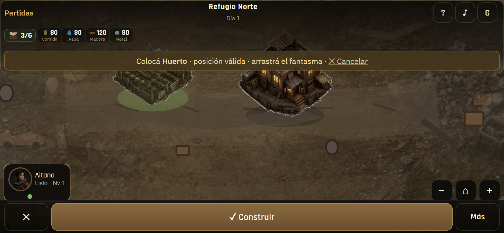
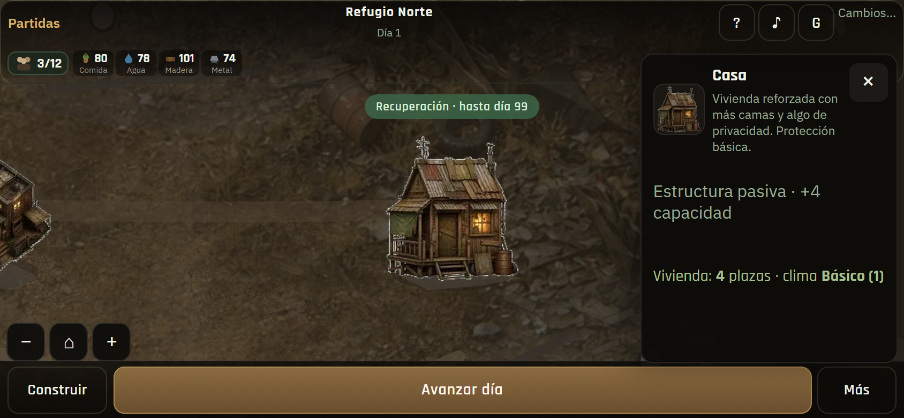
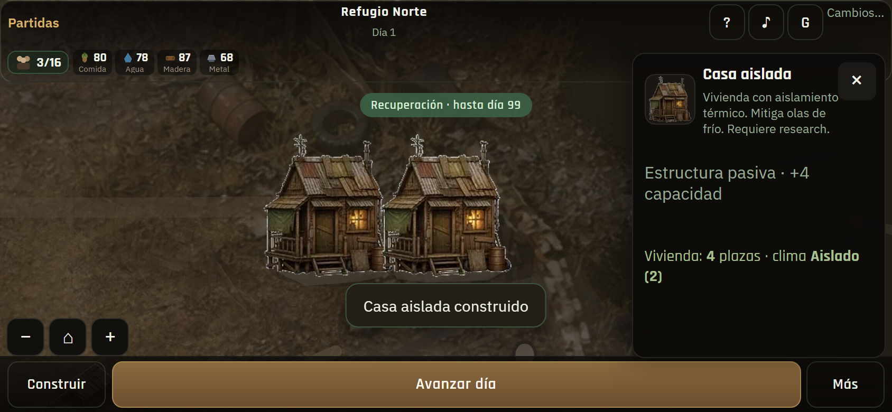
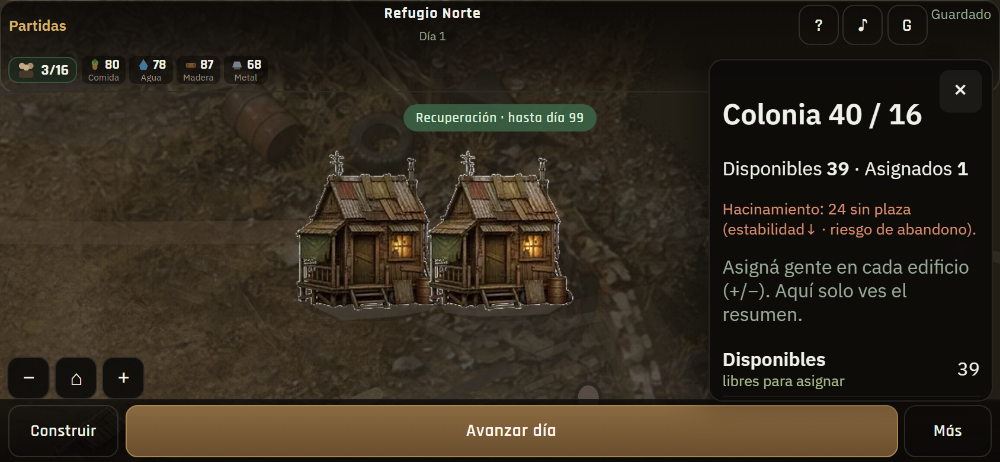
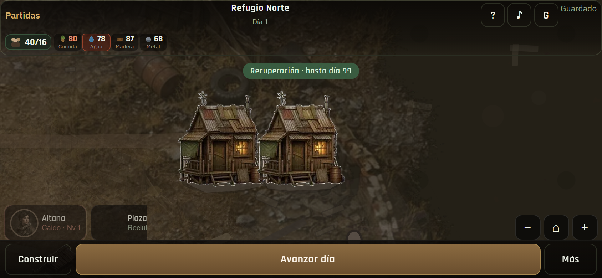
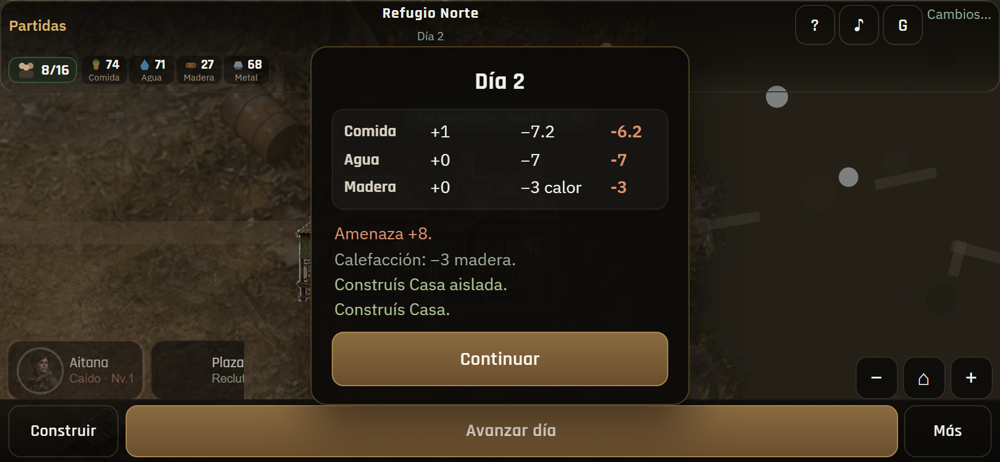
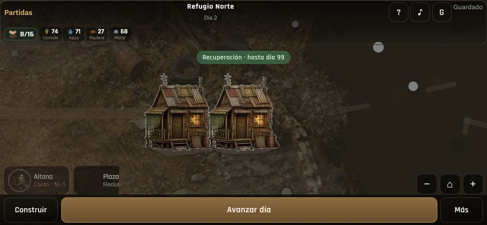
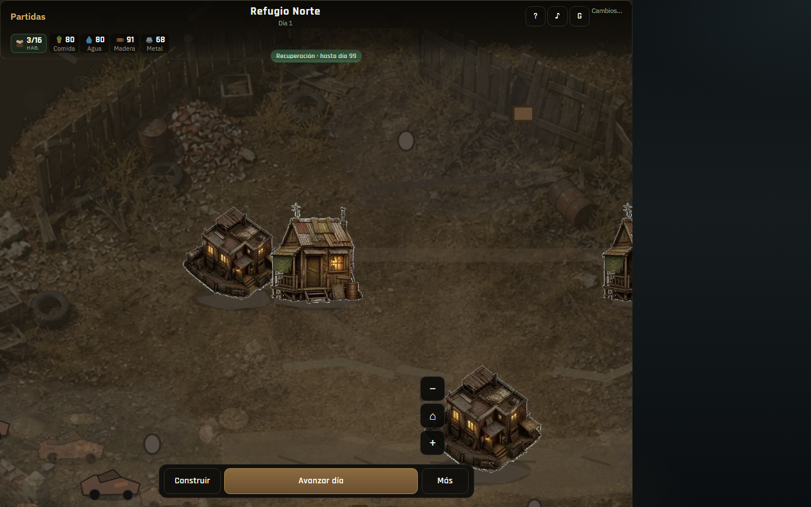
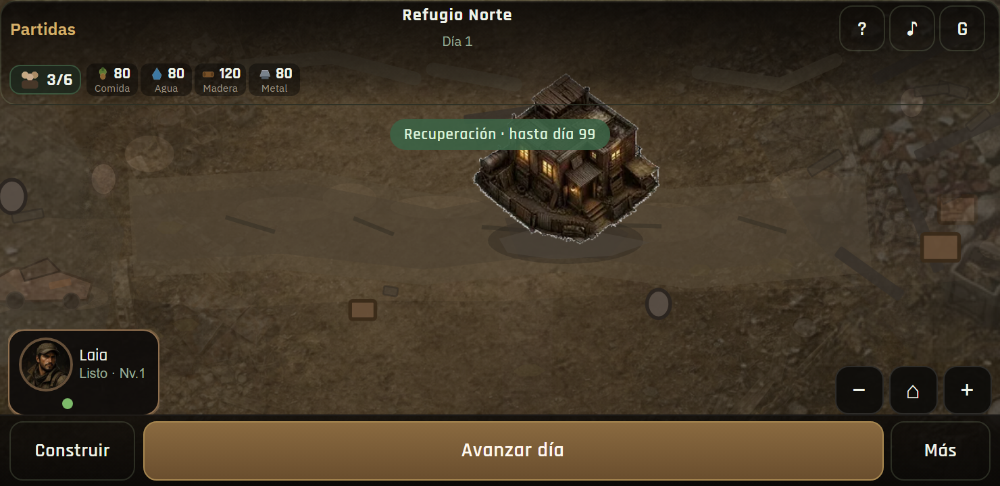

01 · Preview buildSuperficies solo en build

02 · Casa climaProtección básica (1)

03 · Casa aisladaProt. aislado (2) · tech insulation

04 · Overflow viviendaAviso hacinamiento

05 · Explorador caídoDolor visible en rail

06 · Brief fríoMadera × cobertura climática

07 · ColoniaShelter+house+aislada

08 · DesktopPanel + viviendas

09 · 740×360Landscape compacto